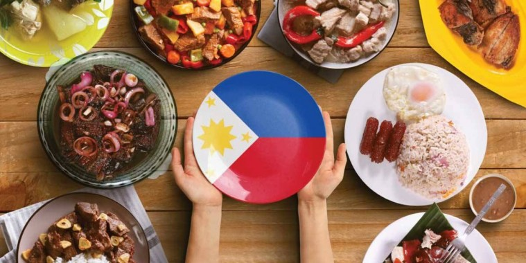
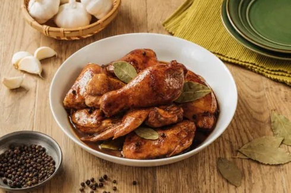
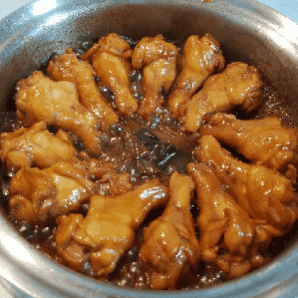

Original Filipino Recipe
Chicken Adobo
By: Michael Jan R. Tangalin

Preparation Time: 15 minutes
Ingredients
- 30g Canola Oil
- 24g Crushed Garlic
- 30g Sliced Onion
- 1 kg chicken cut ups
- 30g Vinegar
- 60g Soy Sauce
- 240g Water
- 4g Bay leaves
- 2g whole Slightly Crushed, Black peppercorns
- 2 pc Knorr chicken cubes
- 4g Brown Sugar packed
- Option: 30g kale or spinach
Kitchen Utensils
- Spoon & Fork
- Kitchen Knife
- Non-stick Frying Pan
- Spatula
Cooking Process

- Heat oil in pan and sauté garlic and onions.
- Then add chicken to the pan and sear on all sides, until you have a little browning in the chicken skin.
- Pour in vinegar, soy sauce and water.
- Add bay leaves, pepper and Knorr Chicken Cubes.
- Bring to a boil over high heat then reduce heat to simmer, but do not cover the pan.
- Continue to simmer for 10 mins.
- Remove chicken pieces from sauce and fry in another pan until nicely browned.
Nutritional Facts
- 224 Calories
- 15 g of Fat
- 21 g Protein
- 771 mg of Sodium
- 27 mg Potassium
- 65 mg Cholesterol
Activities Needed to Burn Calories
- 34 Minutes of Cycling
- 22 Minutes of Running
- 1.3 Hours of Cleaning
© Knorr.com